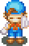
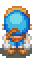
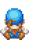
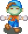
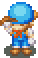
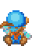

Quanto tempo voce consegue trabalhar com suas ferramentas depende da sua Stamina. Quanto mais Stamina voce tem, voce pode trabalhar mais na fazenda antes de ficar azul. Quando ficar azul voce vai precisar descancar na Clinica, nas fontes termais/hot springs, ir para cama ou comer alguma comida. Quando voce voltar a cor normal voce pode trabalhar mais um pouco.
Sua Stamina e dividio em duas partes: sua forca (tambem chamado de sua energia) e sua fadiga. A forca comeca com um valor alto e diminui ate zero, enquanto que sua fadiga comeca do zero e vai aumentando. A Stamina tambem e baseado em pontos. Voce vai comecar seu jogo com 150 pontos de forca e 100 pontos de Fadiga. Voce pode aumentar sua forca encontrando Power Berries/Super Bagas que estao escondidos pelo jogo. Cada Berry/Baga vai adicionar 10 pontos para sua forca total. Se voce encontrar todas as 10 Berries entao voce tera 250 pontos de forca. Voce nao tem nemhum modo de aumentar o numero de pontos da fadiga que voce possui. A unica Berry que vai te ajudar na Fadiga e a Blue Berry/Baga Azul que voce pode receber de Kappa. A blue Berry permitira que voce trabalhe na chuva sem o clima afetar seus pontos de Fadiga. |
 Faltam 50% de forca  Faltam 20% de forca Faltam 05% de forca Faltam 00% de forca |
|
 50% de Fadiga faltam  20% de Fadiga Faltam |
Depois de terminar usando seus pontos de Forca, voce ainda pode continuar a trabalhar por que os pontos da sua Fadiga comecam a contar. Normalmente seus pontos de Fadiga nao irao comecar ate voce usar toda sua forca, mas ha poucas coisas que comecam a aumentar sua Fadiga antes de usar sua forca. Se voce trabalhar fora quando esta chovendo (Ou nevando) e voce nao obtevea Blue Berry do Kappa, os pontos da sua fadiga ira aumentar no mesmo tempo que os pontos da sua forca diminui. Sua Fadiga tambem subira se voce usar uma de suas ferramentas depois das 10pm, se nao for pra cama depois da meia-noite ou comer um cogumelo envenenado ou uma Erva Vermelha que voce encontra no Mother's Hill. Quando sua Fadiga alcanca 100 voce ficara azul, mesmo se voce tem muitos pontos de Forca sobrando. Para ajudar a manter sua Stamina, voce pode usar` itens que voce tem dentro da sua casa. O item obvio eque recarrega sua Stamina e a sua cama. Dependendo de quantas horas voce dorme, voce vai recarregar sua Forca e Fadiga em uma boa quantidade. Colocando Um Moon Drop/Pingo de Lua ou Blue Magic Grass Flower/Flor da Erva Azul Magica no vaso de flores ajudara a ganhar mais forca quando voce dorme. Se voce colocar uma Pink Cat/Gato Rosa, Red Magic Grass/Erva Magica Vermelha ou uma Toy Flower/Flor de Brinquedo no vaso, afetara sua Fadiga do mesmo jeito No inverno voce nao pode colocar nenhuma flor, voce pode colocar um pedaco de madeira na lareira para ajudar a manter a Fadiga. A lareira esta disponivel quando voce da um upgrade na casa para o seu maior aprimoramento. Nao coloque um pedace do madeira na lareira durante outra estacao por que tem o efeito oposto na sua Fadiga! Para Imediatamente recarregar sua Stamina, voce pode comer comida. Diferentes itens de comida recarrega voce em quantidades diferentes. A melhor comida para comer e a Erva de Elli, no qual e ideal por que pode levar com voce quando voce entra nas minas. Voce tambem pode comprar comida em varias lojas da Cidade Mineral ou cozinhar para voce mesmo. Quanto mais ingredientes voce adiciona para uma receita basica, mais afetara sua Stamina quando voce come-la. Se voce fez a receita basica antes e esta adicionando mais ingredientes, voce vai contar quanto SR (Strenght Recovery/ Recuperar Forca) e FR (Fatigue Recovery/Recuperar Fadiga) a nova comida cozinhada comparado ao que voce fez antes. |